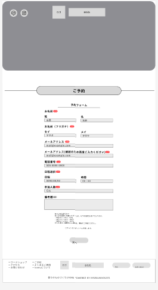
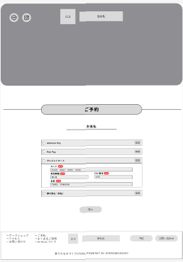
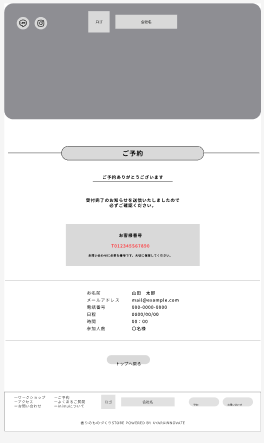
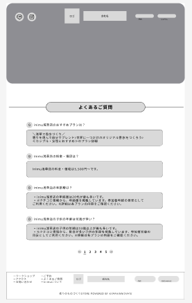
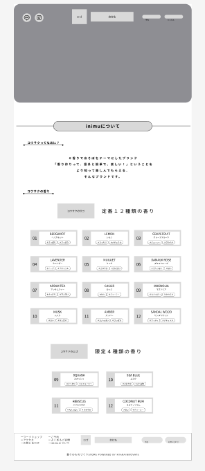

DOCUMENT 05
ワイヤーフレーム
ワイヤーフレーム作成方法
トップページ
配置意図の説明 必須
各セクションの配置理由とユーザーへの効果
本サイトは、ユーザーの「興味 → 理解 → 行動」を意識した構成としている。
まずファーストビューで視覚的に興味を引き、コンセプトや特徴でサービス内容を理解させる。その後、体験の流れや写真により安心感と具体的なイメージを持たせ、最終的に予約ボタンへ誘導する設計とした。
また、アクセス情報やお問い合わせを配置することで、不安や疑問を解消し、スムーズに行動できるようにしている。
下層ページ
下層ページ ワイヤーフレーム 必須
各下層ページのワイヤーフレームを順に配置
【2】予約



配置意図：ユーザーが迷わず予約できるように、シンプルな導線と分かりやすい入力フォームを設計した。
入力項目を最小限にすることで、離脱を防ぐことを目的としている。
【3】よくあるご質問

配置意図：ユーザーが事前に抱く疑問や不安を解消するために配置した。
問い合わせ前に自己解決できるようにすることで、ユーザーの負担軽減と利便性向上を図っている。
【5】inoriについて

配置意図：ブランドのコンセプトや世界観を伝え、ユーザーの共感を促すために配置した。
また、どのような香りがあるのかを紹介することで、体験内容を具体的にイメージできるようにしている。
サービスの背景を理解してもらうことで、体験価値の向上につなげている。